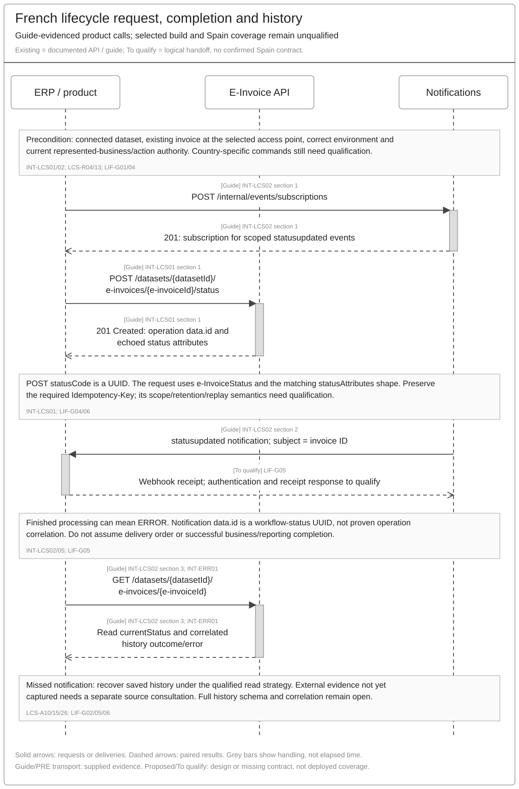
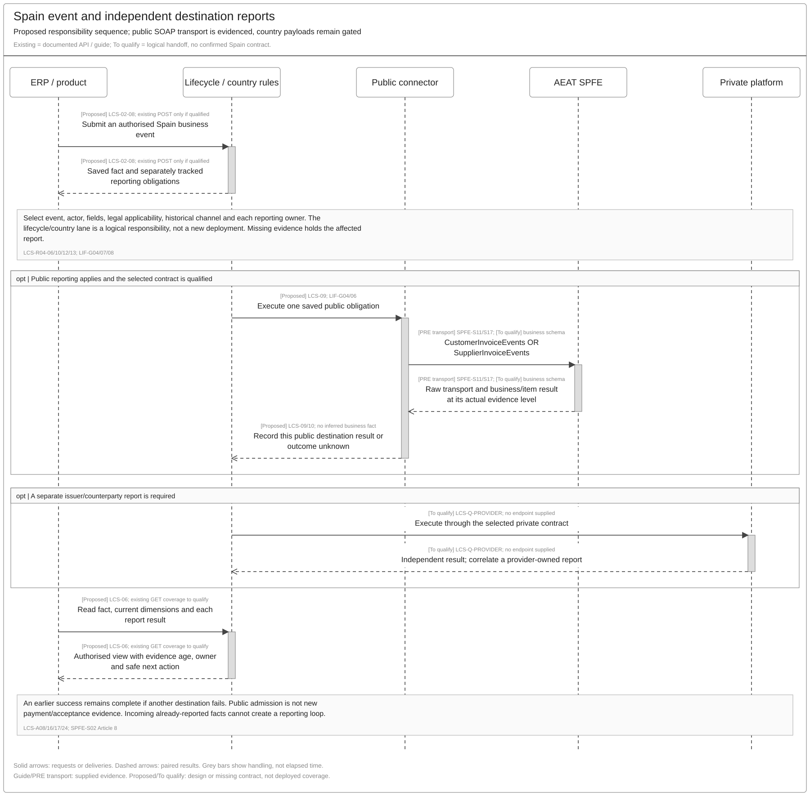
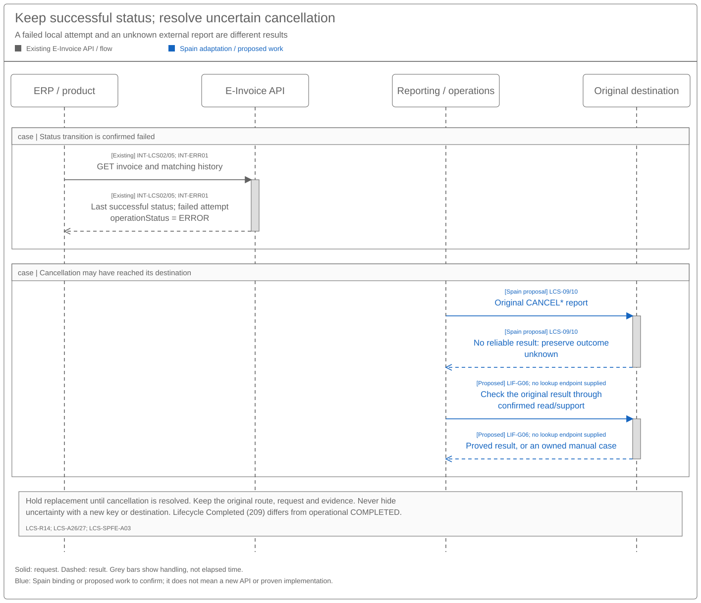

Invoice Lifecycle Sequence and Reuse Assessment
Solution Summary · Logical Feature Specification
Revision overview
This separate API view assesses the supplied French lifecycle API against SPEC-SEI-009 and the functional view. The predecessor remains unchanged and selected for stable Confluence page 923861398. Existing LCS-INT/data and provider assessments remain available there; this view adds guide-evidenced operations, Spain gaps and engineering qualification.
The user reports that the French API was built for reuse. Treat that as the reuse direction to investigate. The supplied contract supports useful common patterns; it does not establish the implementation's architecture, Spain coverage or production readiness. No new endpoint, status UUID, breaking schema change or deployment boundary is approved here.
1 Reuse decision and product impact
Use the existing lifecycle API as the first implementation reuse candidate. Its documented shape separates dataset/invoice scope, a status UUID, variable statusAttributes, an operation response, asynchronous completion and invoice history. This can support a stable product integration while country rules vary, if the actual build provides those extension points. INT-LCS01/02/05. A variable object in a guide is not proof that arbitrary fields are accepted or that country selection exists.
| Delivery scope | Possible API or rule changes to qualify | Product integration impact | Affected operations |
|---|---|---|---|
| Public consultation in existing Phase 1 | Bind qualified AEAT observations to independent dimensions and the saved view. | Existing invoice reads may be reusable; exact field coverage is unknown. No AEAT webhook is established. | Invoice GET; GetInvoices / GetRegisteredInvoice |
| Spain recipient reporting in the owning release | Country-specific action identifiers, required dates/reasons, report ownership and cancellation. | Reuse POST only if the schema represents the selected Spain action without loss. Clients need qualified identifiers/payloads and separate attempt/report outcomes. | Status POST; CustomerInvoiceEvents |
| Optional issuer reports / optional customer actions | Product-enabled scope plus collection/default/cancellation mappings. | Keep disabled until approved. A readable event does not establish a writable command. | Status POST if qualified; SupplierInvoiceEvents |
| Private exchange and reporting fan-out | Provider-specific mapping, direction, actor, automatic reports and historical route. | Products may retain the common call pattern; provider contract and obligation visibility remain gaps. | POST, events, GET; selected provider operations |
| Shared completion/recovery | Exact attempt correlation, complete history, key semantics and country isolation. | Process notifications as completion prompts; read results and recover missed notifications. No confirmed breaking change is established. | All three common operations |
This table preserves PRD-SEI-224's phase boundaries. The French payment flow supplies no separate payment endpoint. Do not invent one or resubmit invoice UBL to attach a payment fact. That does not prove that its current status payload can represent Spain payment reporting. INT-LCS01; LIF-G04.
2 Operation assessment
| Operation and purpose | Exact evidence | Functional controls | Reuse and Spain qualification |
|---|---|---|---|
| Subscribe to completion | POST /internal/events/subscriptions; Notifications 6.3.0 link. resource = einvoice, eventType = e-invoicing.einvoice.statusupdated. INT-LCS01/02. |
LCS-R08/11; A10/23 | Existing implementation candidate. Qualify environment/access-point source, dataset scope, webhook authentication, delivery and replay. The France production source is not a Spain default. |
| Request a lifecycle change | POST /datasets/{datasetId}/e-invoices/{e-invoiceId}/status; E-Invoicing 1.13.0 link. INT-LCS01. |
LCS-R04–07/12–14 | Reuse envelope/operation pattern. Spain action UUIDs, payload schema, actor rules, correction commands and external effects remain unknown. Numeric French code or AEAT string cannot be substituted for the UUID. |
| Receive completion notification | Guide event example com.sage.network.api.e-invoicing.einvoice.statusupdated; subject identifies invoice; data.id is a workflow status UUID. INT-LCS02. |
LCS-R08/14; A26/27 | Completion may represent ERROR. Qualify correlation to the POST operation, event identity and sequence; inspect history before choosing recovery. |
| Read saved invoice/history | GET /datasets/{datasetId}/e-invoices/{e-invoiceId}; read data.attributes.history. INT-LCS02; INT-ERR01. |
LCS-R03/08/11/14 | Existing error guide locates attempt fields under history and the latest snapshot under currentStatus. Full entry schema, paging, retention, concurrency and result freshness remain unqualified. GET does not itself discover an external event Sage has not received. |
| Consult Spain public evidence | Catalogue GetInvoices / QUERYBYID, GetRegisteredInvoice / QUERYBYFILTER; supplied PRE WSDLs. SPFE-S03/S14/S15. |
LCS-R01–03/11; A15 | Existing public transport candidates; exact status coverage, actor scope, filters/continuation and source completeness need qualification. Query failures retain the last view and evidence age. |
| Report recipient events | CustomerInvoiceEvents, certificate/seal SOAP ports; SPFE-S11. |
LCS-07–10; SPFE-R01–04 | Recipient PAYMENT, REJECTION and their cancellations. Final wire envelope, business schema and response correlation remain open. |
| Report issuer events | SupplierInvoiceEvents, certificate/seal SOAP ports; SPFE-S17. |
LCS-07–10; SPFE-R01–04 | Issuer SETTLEMENT, DEFAULT and their cancellations. Optional reporting and qualified product scope differ from command availability. |
The SOAP operations are public connector candidates, not product endpoints. Supplied WSDL operation/port names do not establish complete Annex II body schemas, production addresses, numeric batch limits or deployed support. Use SPEC-SEI-011 for transport ownership and the original contracts in REF.
2.1 French request, notification and history read


The sequence shows documented product calls. It does not assert a particular internal component structure. A created operation and completion event require a result read; neither establishes a successful business transition or Spain report. A missed notification can be recovered by a qualified read strategy under LIF-G05/06.
2.2 Spain business event and independent public reporting


This is a proposed responsibility sequence. The lifecycle/country lane is not a new service decision. The selected command needs qualification before use. Choose the recipient or issuer SOAP operation by the reporting actor and event. Create a private/counterparty report only when applicable and through its own qualified contract. Observe each result separately; no private endpoint is invented here.
2.3 Failed transition and uncertain cancellation


The first branch applies the supplied failed-transition rule. The second shows an uncertain Spain cancellation. A local ERROR does not prove that AEAT rejected or never received the report. If an external effect remains possible, preserve and reconcile the original action; hold its replacement until the qualified recovery rule permits it. No reconciliation endpoint is supplied by the guides.
3 Contract details that affect reuse
3.1 Identifiers, payloads and outcome domains
| Contract element | Evidence and integration rule | Gap / owner |
|---|---|---|
| Dataset and invoice | Preserve datasetId and the existing e-invoice ID. Current represented-entity/action authority is a separate check. |
Spain onboarding/access-point and historical binding: API/Identity; LIF-G01/07. |
statusCode |
Request field is a UUID. French numeric 200 appears for three different UUIDs. AEAT PAYMENT is an external ResponseCode, not a UUID. |
Country catalogue and selection rules: API/Country; LIF-G02/04. |
statusAttributes |
Documented per-status object. Refused uses rejectionData[]; Disputed uses disputeData[]; Partially Approved uses partiallyApprovedData[]; Suspended uses one suspendedData object. |
Allowed Spain fields, validation, backward compatibility and unknown-field behaviour: API; LIF-G04. |
| Payment fields | France supplies paymentData[] with required netAmount and currencyCode, optional vatRate. It describes partial or full payments. |
Spain requires actor-specific full payment/collection and dates; see section 3.2. API/Spain owner. |
| Time | Optional lifecycleMetadata.statusDateTime is a UTC date-time; POST response creation time and webhook time are different observations. |
Date-only legal fields, time-zone conversion and missing occurrence evidence: Spain/API; LIF-G04. Never substitute notification time. |
POST result data.id |
Guide identifies a status-change operation. | Exact history correlation and retry lookup: API; LIF-G05. |
| Notification identifiers | subject = invoice; data.id = status UUID; example top-level id has ambiguous resource/status annotation. |
Prove event/operation identity, deduplication and order. Do not deduplicate distinct attempts using the status UUID. Notifications/API; LIF-G05. |
| Attempt outcome / error | INT-LCS05 defines IN_PROGRESS, COMPLETED, ERROR. Existing INT-ERR01 places them in data.attributes.history[].operationStatus, with nullable history[].errorCode. |
Prove complete entry schema and exact attempt correlation in the selected build; API; LIF-G02/05. |
| Latest status snapshot | INT-ERR01 locates it at data.attributes.currentStatus; that object has neither operationStatus nor errorCode. |
Read attempt failures from history. Qualify which dimensions the snapshot actually represents; LIF-G02. |
| Lifecycle Completed | French numeric 209, UUID 00000000-0000-0000-0000-140000000000, means requested information was supplied after suspension. |
It is distinct from operational COMPLETED, payment and reporting completion. LCS-A27. |
Keep existing LCS-D01–10, interaction contracts and data inventory as the detailed logical baseline. No storage or component allocation follows from this API assessment. Qualify whether existing response fields can carry these concerns before proposing additions.
3.2 Spain field coverage against the French guide
This is a gap assessment, not an approved transformation table. Exact Spain semantics and cardinalities are in SPEC-SEI-029 section 5.2 and its AXII source links. All mappings below remain unqualified.
| Spain requirement | French guide candidate | Assessment and evidence needed |
|---|---|---|
| Four invoice-reference fields | Existing invoice ID and saved invoice metadata | Candidate derivation from saved context; prove exact series/number, issue date, seller NIF/name and actor binding. Dataset owner is not necessarily seller. |
Recipient PAYMENT |
Payment Sent 211 / paymentData |
Semantic mismatch risk: transfer sent is not effective full payment. Prove authority, completeness and date; obtain required DueDate and conditional receipt/indicator fields. No direct mapping approved. |
Issuer SETTLEMENT |
Payment Received 212 / paymentData |
Potential source fact only. France includes partial payment; public SETTLEMENT reports full collection. Prove collection date and conditional due/receipt/financing fields. |
REJECTION with L1 01/02 |
Refused 210 / rejectionData[].reasonCode |
Similar business label does not establish an exact mapping. France closed reasons do not supply the two Spain legal categories. Prove reason, actor and rejection date without losing original detail. |
| Explicit acceptance | Approved 205 |
Candidate private communication under qualified rules; no public acceptance report exists in the supplied catalogue. Preserve explicit versus presumed meaning. |
DEFAULT |
No matching writable action supplied | Missing capability evidence. A derived overdue view cannot automatically become an issuer assertion. |
Four CANCEL* report actions |
No matching writable action supplied | Prove separate cancellation and replacement lineage. French terminal states cannot block a required Spain correction by default. Invoice withdrawal is a different action. |
| Shipment/receipt dates and indicators | No corresponding fields in supplied France payment payload | Qualify legal date semantics, XML selectors and indicator values. Optional lifecycle time cannot encode several distinct required dates. |
| Several destination outcomes | POST operation and invoice history | Full schema absent. Prove separate issuer/public obligations and provider-owned reports without duplicate submissions. |
For XML creation, assess existing DTS first. Qualify actual ApplicationResponse support, transformation contracts, mappings, rule pack, country versioning, observability and recovery. DTS can transform a qualified event; it cannot supply missing authority, event facts or legal interpretation. LIF-G04.
3.3 Authentication, retries and completion
The supplied guide accepts Domain Services or Sage ID M2M tokens and requires Authorization, traceparent, tracestate and Idempotency-Key for status POST. Public SOAP certificate authentication and registered representation remain separately qualified under SPFE-S02 Article 11 and the selected WSDL. Do not copy a product bearer token into an unrelated provider call.
| Condition | Required handling | Qualification |
|---|---|---|
| Repeated logical command | Preserve original request identity and content. A changed correction is a separately linked action. | Key scope, retention, mismatch response, concurrent requests and supported replay: LIF-G06. |
201 Created or echoed payload |
Save operation identity and await/read its processing result. | Admission does not prove completion or public reporting. INT-LCS01/02. |
| Completion event | Verify scope, deduplicate by qualified event identity and read the correlated result. | May indicate ERROR; full event/correlation contract: LIF-G05. |
Confirmed transition ERROR |
Apply LCS-R14. Retain last successful status and failed attempt; offer an owned correction. | External-report outcome remains independent. LCS-A26/27. |
| Timeout after possible external mutation | Keep that destination outcome unknown and reconcile the original action. | No blind POST replay, new key or route fallback. Actual lookup/retry semantics: LIF-G06. |
429 with Retry-After |
Respect delay; apply the qualified mutation-safety rule before retrying. | Delay alone does not establish absence of an earlier effect. |
| Missing notification or concurrent changes | Read qualified history; use source consultation for evidence not yet captured. Preserve all attempts and conflicts. | Complete history/paging, consistency, causal order and concurrency policy: LIF-G02/05/06. |
The existing FR error-handling evidence adds documented history/error paths. Its ERR-SENDING-STATUS-* codes distinguish mapping, unsupported status, update and notification failures. Use its code-specific actions under the selected contract; platform-owned retries do not authorise a product resend. Its six-day support wording is not a Spain legal deadline or a universal waiting period. INT-ERR01; LIF-G05/06. This review does not duplicate that source's error dictionary.
4 Source conflicts and qualification gates
| Gate / owner | Evidence needed and blocked consequence |
|---|---|
| LIF-G01 — API/Architecture and country integration owners | Identify service/build, deployed API versions, actual access-point/country extension points and Spain entitlements. The reuse report is not code evidence. Blocks implementation-readiness claims. |
| LIF-G02 — lifecycle/API owner | Prove independent dimensions, latest successful status, attempt history, per-destination obligations, concurrency and retained rule versions in actual schemas/tests. Blocks assuming the French single status represents all Spain outcomes. |
| LIF-G03 — French API owner | Resolve Payment Received terminal in send guide versus nonterminal in blocked table; Disputed → Refused permitted in send guide but blocked in table; Submitted → Rejected blocked; Completed actor buyer versus supplier; Rejected actor PA versus buyer. Obtain selected schema, approved matrix/version and positive/negative tests. Do not use the supplied table as executable truth or a Spain default. |
| LIF-G04 — Spain integration, DTS, API and Legal/Tax owners | Supply Spain command identifiers, eight code/actor bindings, all 52 field occurrences, complete envelope/schema, validated literal-path/indicator decisions, cancellation and response fixtures. Resolve full/partial payment, date and reason gaps. Blocks affected commands, not preservation of valid incoming facts. |
| LIF-G05 — Notifications/API owner | Prove notification authentication, IDs, operation/history correlation, delivery/replay, full history schema/pagination and consistency. Clarify conflicting illustrative reason values DIS-001, SUP-001, PA-001 against the supplied closed lists; select valid fixtures. Blocks unqualified automatic outcome processing. |
| LIF-G06 — API/public connector/Operations owners | Prove idempotency scope/retention/conflicts, mutation safety, retry budget and original-operation reconciliation, including uncertain cancellation and missed notifications. Provide runbook and owned manual path where lookup is unsupported. |
| LIF-G07 — Identity/Spain and provider owners | Prove represented-party/action authority, historical operator/channel and selected private contract. Retain predecessor LCS-Q-PROVIDER; a new customer route does not rebind old reports. |
| LIF-G08 — Product/Spain country owner | Select release scope and optional actions under existing LCS-Q-OPTIONAL; confirm legal calendars and derived views. Preserve valid incoming optional evidence. An API capability does not approve activation. |
The existing provider catalogues retain B2B Router, Banqup, SERES, EDICOM and ZeroComa evidence limits. This review does not requalify those contracts or replace them with French behaviour. The Annex II comparison found no material field delta; it does not resolve the listed runtime gaps.
5 API qualification acceptance
These checks supplement functional LCS-A01–27; none has been executed against an implementation in this review.
| ID | Required evidence | Functional link |
|---|---|---|
| LIF-API-A01 | Same common envelope selects pinned France and Spain rules without leaking codes, reasons, deadlines, authorities or changed history. Existing French clients and states retain approved behaviour. | LCS-A13/14; G01/02/04 |
| LIF-API-A02 | POST returns a correlatable operation. Pending and failed attempts preserve the successful status. Notification and GET/history recover the exact attempt despite repeated status UUIDs and missing/duplicate events. | LCS-A10/26; G02/05 |
| LIF-API-A03 | Correctly distinguish operational COMPLETED, lifecycle Completed, technical Rejected, business Refused and an external unknown outcome. Confirm guide conflicts against the approved France contract; do not guess precedence. | LCS-A01/22/27; G03/05 |
| LIF-API-A04 | Approved Spain fixtures cover eight codes and 52 fields, full/partial payment, rejection 01/02, distinct dates, optional indicators and cancellation lineage. Missing/invalid content is held before mutation; no France field substitution. |
LCS-SPFE-A01/02; AXII pairs; G04 |
| LIF-API-A05 | Identical-key replay, changed-content conflict, concurrent actions, timeout and 429 follow the selected contract without duplicate business or reporting effects. | LCS-A06/07/08; G06 |
| LIF-API-A06 | Two destinations yield independent outcomes; correlate a provider-created report rather than sending another. An uncertain cancellation holds replacement until a qualified result or owned resolution. | LCS-A08/12/24; SPFE-A03; G04/06 |
| LIF-API-A07 | Wrong dataset/entity/environment/actor is denied. An old invoice retains its permitted historical channel after platform change; no automatic fallback. | LCS-A09/15/19; G07 |
| LIF-API-A08 | Selected build, schema, DTS mapping/rules, positive/negative fixtures, support owner and operations evidence are recorded for the enabled scope. Unqualified capability remains held. | LCS-A14/25; G01–08 |
REF Source references
| Source ID | Original source and version/date | Exact locator | Supported claims and limits |
|---|---|---|---|
| REF-BASE | SPEC-SEI-009, updated 20 October 2026; functional successor view, draft 22 October | LCS-INT-01–11; D01–10; provider catalogues; LCS requirements/acceptance | Canonical draft requirements and logical contracts; no physical allocation approval. |
| INT-LCS01 | Supplied send-status guide extract, received 22 October, revision unknown | §1 request/response, headers and per-status examples; linked API 1.13.0 |
Exact product POST and documented payloads; not Spain schema or deployed build evidence. |
| INT-LCS02 | Supplied receive/history guide extract, same receipt/version limit | §§1–3; linked Notifications 6.3.0; webhook example; invoice GET |
Completion event and history read; full correlation/history contract absent. |
| INT-LCS03/04/05 | Supplied status, reason and outcome evidence, same receipt/version limit | Status list; blocked table; status-specific reasons; user transition note | Exact France UUIDs, conflicts and attempt outcomes. Matrix/Schematron not independently verified; no Spain defaults. |
| INT-ERR01 | Existing supplied FR error-guide extract, received 22 October 2026; revision/build unknown | Processing and error fields; Processing status change; Recovery interpretation | Exact history/currentStatus/error paths and code-specific actions. No complete correlation contract, Spain error mapping or product-side resend permission. |
| SPFE-S02 | Final BOE order, published 5 October 2026; official publication, checked 22 October | Articles 7–11; Annex II pp. 36–42 | Legal/event/authority baseline; not proof of an activated wire contract. |
| SPFE-S03 | Original catalogue, 0.1.0, 9 October 2026 | §§6.4–6.5 and 6.8–6.9, pp. 12–14 and 16–19 | Query/report names, actor/event meaning, exclusivity and correction; not complete request formats. |
| SPFE-S08 | Original formats, 0.1.0, 9 October, BORRADOR | §§5.4–5.5/5.8–5.9, pp. 14–15 | Pending business formats; source-response levels need qualification. |
| SPFE-S11/S17 | CustomerInvoiceEvents.wsdl; SupplierInvoiceEvents.wsdl, supplied 13 October | Corresponding operations, SOAP bindings, certificate/seal service ports | Recipient/issuer PRE transport contracts; no production or complete event-body claim. |
| SPFE-S14/S15 | GetInvoices.wsdl; GetRegisteredInvoice.wsdl, supplied 13 October | Operations and ports; catalogue QUERYBYID/QUERYBYFILTER | Consultation transport; does not prove every required event or recovery lookup is exposed. |
| SPFE-S22 | Supplied Annex II, filename dated 21 October, formal revision unknown | I.1–4 pp. 4–14; II/L1 p. 15; review | Source fields, dates, cardinalities and codes; existing path ambiguities remain. |
| REF-FIELDS / REF-DTS | Original AXII ledger; DTS specification; shared evidence baseline | AXII rows and SPFE-Q gates; DTS reuse/qualification | Preferred transformation candidate and source inventory; neither proves ApplicationResponse implementation readiness. |